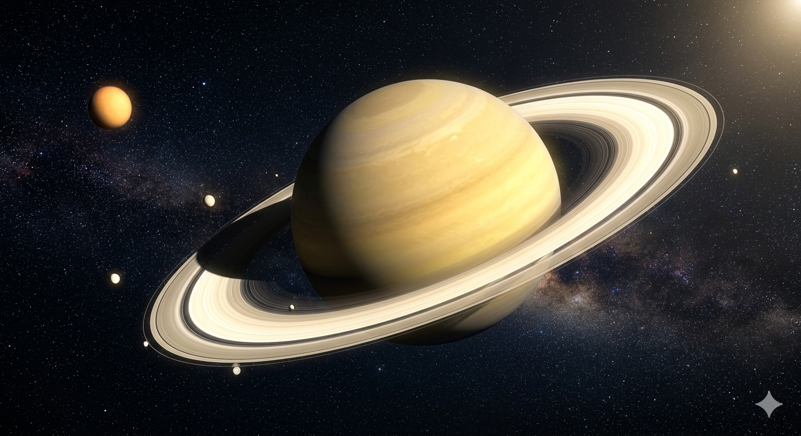

শনি গ্রহের উপগ্রহ এখন কয়টি?
২০২৫ সালের মার্চ। এক লাফে শনি গ্রহের উপগ্রহ হয়ে গেল ২৭৪টি। নতুন ১২৮টি ছোট উপগ্রহের সন্ধান শনিকে উপগ্রহের সংখ্যার দিক থেকে সবচেয়ে ধনী গ্রহও বানিয়ে দেয়।
শনির উপগ্রহ আছে নানান সাইজের। বুধ গ্রহের চেয়ে বড় উপগ্রহ যেমন আছে, তেমনি আছে আবার খেলার মাঠের সমান চাঁদও। দানবীয় উপগ্রহ টাইটান গ্রহটির সবচেয়ে বড় উপগ্রহ। সৌরজগতের সবচেয়ে বড় উপগ্রহ অবশ্য বৃহস্পতির চারপাশে ঘোরা গ্যানিমিড। টাইটান আমাদের চাঁদের চেয়ে ৪৮ ভাগ বেশি চওড়া। ভর বেশি ৮০ ভাগ।
এ লেখার সময় পর্যন্ত শনির উপগ্রহ পাওয়া গেছে ২৯২টি। ২০২৫ সালের শুরু পর্যন্ত কিন্তু গ্রহরাজ বৃহস্পতিরই সবচেয়ে বেশি উপগ্রহ ছিল। কিন্তু বর্তমানে এর চারপাশে ঘোরে ১১৫টি উপগ্রহ।
শনির উপগ্রহ টাইটানের নাইট্রোজেনসমৃদ্ধ বায়ুমণ্ডলের সাথে পৃথিবীর মিল আছে। ভূমিরূপে আছে নদীর জাল ও হাইড্রোকার্বনের হ্রদ। ১৬৫৫ সালে ক্রিশ্চিয়ান হাইগেন্স উপগ্রহটি আবিষ্কার করেন। একে একে আরও উপগ্রহ পাওয়া যেতে থাকে। বিভিন্ন মহাকাশ অভিযান কাজটি আরেক ধাপ এগিয়ে নেয়৷ ১৯৮০-এর দশকে ভয়েজার প্রোগ্রাম আবিষ্কার করে অ্যাটলাস, প্রোমিথিউস ও প্যান্ডোরা। ক্যাসিনি অভিযানে পাওয়া যায় আরও কিছু নতুন চাঁদ।

শনির চাঁদগুলোর মধ্যে ২৪টি নিয়মিত উপগ্রহ। এদের কক্ষপথ স্থিতিশীল। অবস্থান গ্রহের কাছাকাছি। বাকি ২৬৮টি অনেক দূরে অবস্থান করছে। চওড়া দুই থেকে ২১৩ কিলোমিটার।
এত বেশি উপগ্রহ থাকার একটি বড় কারণ শনির সাইজ ও ভর। তাছাড়া পৃথিবীসহ ভেতরের গ্রহগুলো সূর্যের অনেক কাছে। ফলে এসব অঞ্চলে বিক্ষিপ্ত বা ভগ্নবস্তুর সংখ্যা কম। সৌরজগতের বাইরের অঞ্চলে বিক্ষিপ্তভাবে ঘুরতে থাকা অনেক বস্তু শনির মহাকর্ষীয় বাঁধনে আটকে যায়৷ এ কারণেই আসলে বৃহস্পতির চেয়েও শনির উপগ্রহ বেড়ে যাচ্ছে।
শনির সাথে বৃহস্পতির উপগ্রহযুদ্ধ অবশ্য অনেকদিনের। ২০১৯ সালের অক্টোবরে প্রথম শনি এগিয়ে যায়। সেসময় শনির ৮২টির বিপরীতে বৃহস্পতির ছিল ৭৯টি উপগ্রহ। ২০২৩ সালের ফেব্রুয়ারিতে নতুন ১২টিসহ বৃহস্পতির উপগ্রহ হয় ৯৫টি। ফলে বৃহস্পতি ছাড়িয়ে যায় শনিকে। একই বছরের মে মাসে শনি আবারও এগিয়ে যায়। ৬২টি নতুন উপগ্রহ নিয়ে সংখ্যা হয় ১৪৫। এরপর ২০২৫ সালে তো কফিনে শেষ পেরেক। ১২৮টি নতুন উপগ্রহ নিয়ে শনি তৈরি করে একক আধিপত্য। বর্তমানে শনি ও বৃহস্পতির উপগ্রহসংখ্যা যথাক্রমে ২৯২ ও ১১৫টি।
সূত্র
- https://science.nasa.gov/saturn/moons/
- https://ssd.jpl.nasa.gov/sats/discovery.html
- https://physics.uiowa.edu/news/2025/03/space-scientists-discover-128-new-moons-orbiting-saturn